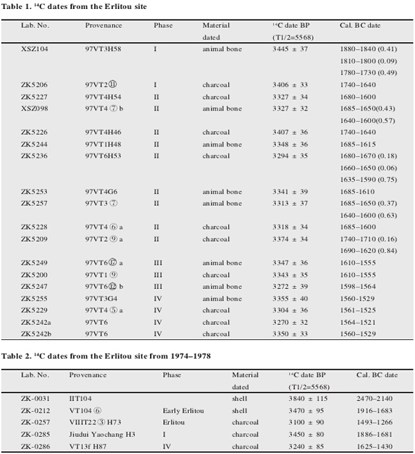

Materials

http://www.kaogu.cn/en/Research_work/Other_topics/2014/0728/46977.html
The Erlitou site is divided among four phases, each phase dating to a different time frame. Each site was radiocarbon dated by archaeologists, Zhang Xuelian, Qiu Shihua, Cai Lianzhen, Bo Guancheng, Wang Jinxia, and Zhong Jian for Chinese Archaeology. The results of the radiocarbon dating are displayed in the image above.